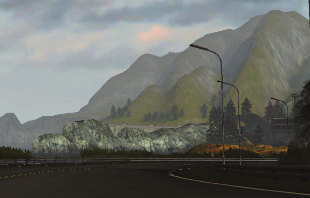
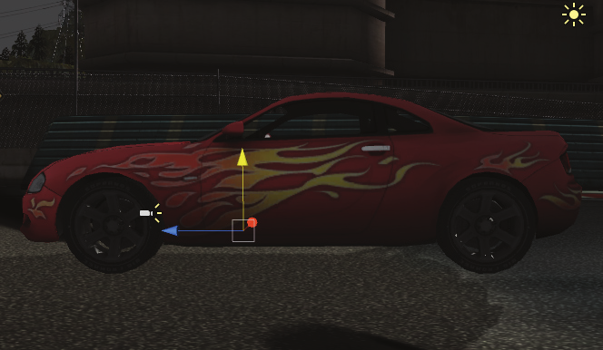
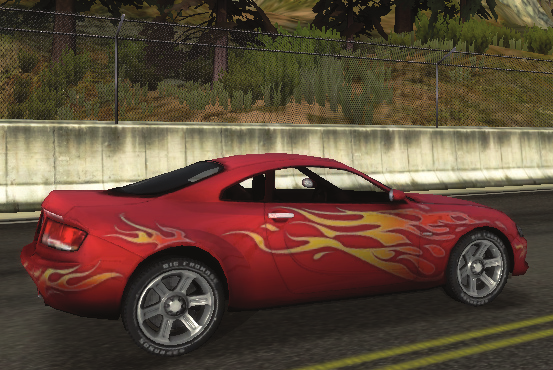
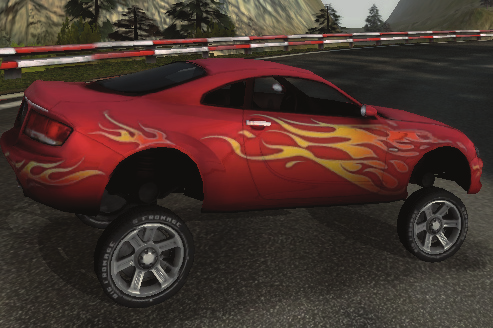
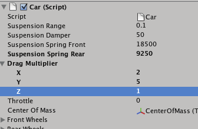
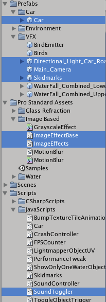

“The Car Tutorial” Part 2
Creating a Racing Game for Unity

Part 2: Tweaking the Car
If you’ve followed along part 1 of this tutorial and assembled the car, you are already at a point
where the car is pretty awesome. But if you have driven it around a bit, you will probably have
noticed that there is after all room for some improvement.
This is where tweaking enters the picture. In game development tweaking is a crucial part of making
your game fun, challenging, awesome or whatever goal you have for your specifi c game. The idea is
that when you have setup the nuts and bolts that makes your game run, there might be something
that doesn’t feel quite right - maybe you want the car handling to be a bit different, maybe you want
the top speed to be slightly different, or maybe you want to change the scene lights.
A major strength of Unity is it’s tweakability - as you have seen, all the public variables in your scripts
are shown in the inspector, so you can change values without going into the code. And even more
powerful: When you’ve made a change you just hit play, and you will instantly see the result of that
change. You never have to wait for the scene to be rebuilt or for a major recompile of the code.
Center of Mass
Now the most obvious thing that needs to be tweaked is probably that the car can very easily be
fl ipped around when turning (if you haven’t tried yet, then play again and speed up a bit and
then turn from side to side while speeding - the car will will fl ip over pretty easily). The reason for
this fl ipping is that we haven’t yet defi ned the car’s center of mass. All the forces that are applied
to the Rigidbody of the car, are all applied at the Rigidbody’s center of mass. The center of mass
of the Rigidbody will be calculated by Unity according to the Colliders attached to the Rigidbody,
either on the same GameObject or on child objects. Since the center of mass of a car is typically not
the center of the car (and probably not the center of mass that Unity calculates), we want to set the
center of mass ourselves.

The position of the center of mass for a car de-
pends on the placement of the engine and other
factors, and it can vary a lot from one car model
to another. For the car in this tutorial project the
center of mass could be a little behind the engine,
slightly above fl oor height of the car. See it’s posi-
tion in this image:
• Create a new GameObject and drag it to the Car game object.
• Rename it to CenterOfMass
• Reset the CenterOfMass’s Transform (click the little cog wheel to the right of the Transform in
the Inspector and select ‘Reset’. This will give it the same position as its parent, the car.
• Adjust its position to somewhere you like. Either do it by dragging, or type in the position. A
good position for this car’s center of mass could be (0, 0.1, 0.65).
• In the Inspector assign the CenterOfMass to the slot for it in the Car script Component.
In general, it is a bad idea to have the center of mass be positioned to either side of the center in
the x-axis, because this will make the steering behave oddly, and thus we have also set the x vari-
able of the position to 0.
You can also change the Camera’s target to be the CenterOfMass Game Object instead of the car
itself. This will give a slightly different feeling - play around with it and decide which setting you
like the most.


Suspension
Another factor that can heavily change the behavior of the car is the properties of its suspension.
The job of a car suspension is to maximize the friction between the tires and the road surface.
When you are driving the car over a bump, all of the wheel’s vertical energy gets transfered to the
frame. If we did not have an intervening structure, this could easily result in the wheel loosing con-
tact with the road completely, and afterwards slamming down into the road because of the force
of gravity. The suspension is that intervening structure.
We have three different variables to tweak from the Inspector - the range, the damper and the
spring. All are part of the WheelCollider class that we use on the car’s wheels.
To the left we see the car with the standard settings, and to the right we see it with a much larger
suspension range. Combined with the spring and damper properties, you can make it behave like
everything from a formula one car to a huge monster truck. Of course the graphics need to match
the settings to make it believable though!
Suspension range
This is the length of the suspension from when it is a state of being fully compressed to the largest
distance it can be away from the frame of the car.
Suspension spring
The value set here determines the stiffness of the suspension spring. Setting it very high makes it
more likely that the suspension will be fully extended, so that the wheels will be far away from the
frame, and setting it very low will make the suspension much more bouncy. When tweaking this
value, it will be clear that the mass of the car also has a lot to say here. A very heavy car requires a
spring with more stiffness than a very light car. By default we have set the rear suspension spring
to be less stiff than the front and the reason is that the center of mass is distributed more to the
front side, requiring better suspension there. Playing around with different values for both front
and rear suspension can yield very different results.
Suspension damper
Dampening helps controlling the motion in the suspension. Without dampening, the suspension
spring would extend and release it’s energy at an uncontrollable rate - it would extend at it’s natu-
ral spring frequency until all the energy stored in it was used up. This would result in an extremely
bouncy and uncontrollable car. The damper or shock controller turns the unwanted kinetic energy
into heat that gets transferred away in the hydraulic fl uid, making the ride a lot smoother.
Drag Multiplier

When we added the Rigidbody to the car, we saw that it had a drag property. This drag is the
intertia or air resistance that affects the Rigidbody, making it harder to move. When a car is de-
signed, a lot of consideration is often put into giving it a shape that minimizes the friction from the
air resistance when it moves. But since a car is meant to move forwards, the shape takes this into
account - just take a look at the car model in the editor from the front, the sides and the top, and
you will realize that it is a lot more streamlined when seen from the front than from sides and top.
We take this into account by creating our own drag multiplier property that we use instead of the
drag property built into the rigidbody. Take a look at the Car script component in the Inspector,
where you will see that we have a Drag Multiplier variable, which is a vector with x, y and z values.
This makes it possible for us to set different drag values for the front, sides and top of the car, mim-
icking the real conditions when driving a car more accurately.
•
The X value is the drag to the side
•
The Y value is the drag to the top
•
The Z value is the drag to the front
The x value is important in controlling the force that prevents the car from sliding sideways when
turning. The higher the x value the more sideways resistance.
The z value is by far the most interesting one because it can lower or increase the force that slows
the car’s velocity down. If you set it to less than 1 you will get less resistance, faster acceleration
and a higher top speed. More than 1 and the car must struggle against a more powerful force in
order to move forwards, making it slower. The drag values are very sensitive, so you are advised to
experiment with small changes when tweaking the drag.
Since the car is not supposed to travel upwards, the y value is not as interesting to change. The most
important force controlling the car in the y-axis is after all the gravity that affects the rigidbody.
Speed, turning and gears
Now we’ve gotten to the more obvious variables that also has a quite large impact on your cars
behavior.
The Top Speed variable is a no-brainer: This sets how fast (or slow) your car can go. Since our car
model is a lot simpler than a model for a real car, and we for example don’t really have any values to
set that affects it’s acceleration (except the drag), the Top Speed variable will also indirectly affect
the acceleration. Making the car very fast will also make it reach a high velocity equally higher and
vise versa. If you want to play with top speed and acceleration, you could try tweaking both the Top
Speed value and the drag’s z variable (which was the air resistance in the forward direction)
For turning we have two variables - Maximum Turn and Minimum Turn. Both are values for how
good the car is at turning. A high value means excellent turning and a low value is very limited
turning ability. We are using them together in the car’s script to change the cars ability to turn
based on how fast it is going:
• At very low speeds, it is the value set for Maximum Turn that is used when turning.
• The higher the car’s speed gets, the closer it’s turning ability gets to the Minimum Turn.
What this adds up to when using the default values for the Car (which are 10 for minimum and 15
for maximum) is that it gets harder to turn when you go fast. This gives a more realistic feel, ensur-
ing that you can’t just go at full speed into a hairpin bend and expect the car to survive it. You can
experiment with both values to make the car better or worse at turning and for making the differ-
ence between turning when going slow and fast higher or lower.
Finally we have exposed the Number Of Gears variable. When we get to the part where we look
inside the Car script we will see what this is used for calculating. Since the car is based on a simple
model, the gears are not mimicking real gear behavior. However, they are used to calculate the
engine forces, and maybe more importantly they are used in the script controlling the sound, to
change the sound of the engine’s pitch, based on what gear we are currently in, and how fast
we are currently going. This makes the car sound like it is starting at low RPM in each gear, and
increasing the RPM until it reaches the limit, where it will switch the gear. Setting this value to an-
other number of gears simply creates an illusion through sound of how many gears the car has.
Exporting the car as a package
If you have followed along and assembled your own version of the car, you now have the knowl-
edge needed to implement it in your own projects. An easy way to transfer it across projects is to
make a Unity Package from the needed Prefabs.
First lets turn the car we made into a Prefab so it can be reused without doing the assembling and
tweaking:

• In the Project view click ‘Create’ and select ‘Prefab’. You will get an empty Prefab in the project
view named ‘new prefab’.
• Rename the Prefab to ‘Race Car’ (a nice palindrome) or any other name to your liking.
• Drag the Car GameObject from the Hierarchy view and onto the Prefab.
This has already been done for you though (it is in Prefabs/Car), but now you also have your own.
There are a few parts that are needed apart from the Car Prefab in order to create a package that
just works from scratch. These are the Skidmarks, Main_Camera
and Directional_Light_Car_Road. Fortunately they have been
made into Prefabs already.
There are also a few scripts that we need to include in our package,
which won’t get included if we don’t specify it: SoundToggler.js,
ImageEffects.cs and ImageEffectsBase.cs The reason is that these
scripts are not included in the scene, but used through scripting
when the game runs. The image scripts are included in the Pro
Standard Assets, but we are including them in the package so it
can be imported into a completely empty project and just work.
•
In the Project view select all of these items:
•
Prefabs/VFX: Directional_Light_Car_Road, Main_Camera,
Skidmarks
•
scripts/Javascripts: SoundToggler.js
•
Pro Standard Assets/Image Based/ImageEffects.cs and
ImageEffectsBase.cs
• The Car Prefab that you created.
• Click ‘Export package...’
• In the pop-up make sure that Include dependencies is checked. This will gather all Assets that
your selection depends on with the exception of assets that are only accessed through scripting.
• Click ‘Export’, choose a name for your package and save it.
The process of getting your Car into your own project is now simple:
• In your new project go to Assets->Import package...
• Navigate to the package you saved and open it.
• Make sure that everything is selected (Click ‘All’) and then click import.
• Unity will import all the Assets and the prefabs will appear in your Project view, ready to be
dragged into a scene.
You are totally free to take the car and use it in your own projects, and now you have the know-
ledge to put it together, tweak it and transfer it across projects - so please go ahead and make a
really awesome driving game!